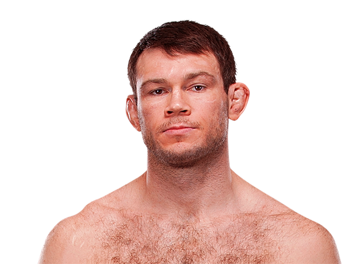

Forrest Griffin es un peleador estadounidense de MMA conocido por su corazón, resistencia y espíritu de lucha. Nació el 18 de julio de 1979 en Columbus, Ohio. Fue campeón de peso semipesado UFC y uno de los protagonistas del reality show “The Ultimate Fighter”, que ayudó a popularizar las MMA.
Griffin es famoso por su estilo aguerrido y capacidad de soportar castigo mientras busca la victoria. Su combinación de striking y wrestling le permitió enfrentar y vencer a rivales de gran nivel, convirtiéndose en una leyenda respetada dentro de UFC.

Otros que podrían interesarte: